Vibe Coding
Nesta atividade, os estudantes atuarão como arquitetos de software em um cenário de desenvolvimento ágil orientado por intenção. Para isso, explorarão o potencial do Vibe Coding e da inteligência artificial generativa (IAG). Por meio de um desafio prático, eles utilizarão técnicas de Engenharia de Prompt e decomposição de problemas, a fim de planejar, refinar e construir um protótipo funcional de aplicativo web utilizando a ferramenta Lovable.
Em vez de apenas utilizarem a tecnologia, os estudantes deverão compreender a lógica por trás das instruções em linguagem natural e entender como a metaprogramação transforma ideias em comandos capazes de gerar códigos automaticamente.
O projeto busca transformar os jovens em protagonistas no uso da tecnologia, passando de usuários passivos a criadores ativos, capazes de identificar demandas reais do seu entorno, compreender os limites da automação e desenvolver soluções tecnológicas inovadoras para os desafios do mundo contemporâneo.
Estrutura da Oficina
Materiais
Lista de materiais/softwares/componentes necessários
Preparar
10 minApresentação
Nesta oficina, propõe-se a exploração da fronteira entre criatividade humana e automação digital por meio do Vibe Coding. Explique que, historicamente, a programação exigia o domínio de linguagens técnicas e sintaxes complexas. Hoje, com a IAG e ferramentas como o Lovable, o foco desloca-se para a clareza da intenção: o programador passa a atuar como um estrategista que organiza ideias em instruções estruturadas, e a IA executa a implementação técnica em código funcional.
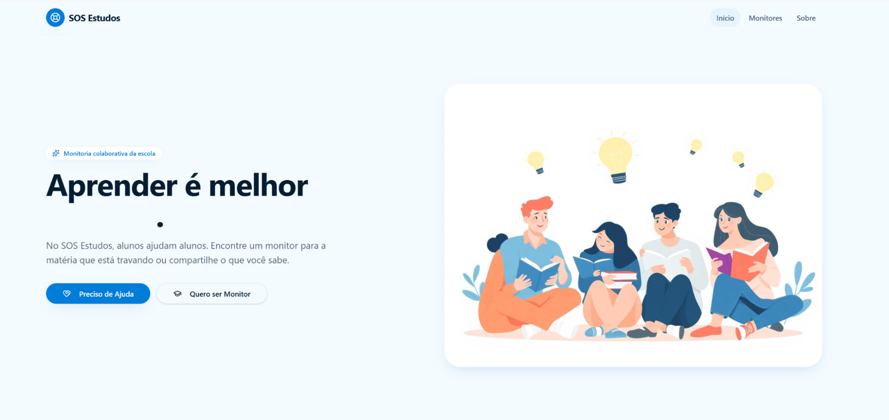
helpPerguntas reflexivas
- Se uma IAG pode escrever milhares de linhas de código em segundos, por que ainda precisamos de humanos para criar aplicativos?
- Se a mesma instrução for fornecida a duas IAGs diferentes, os aplicativos gerados serão idênticos? Quais fatores influenciam essa variação?
- Ao observar o cotidiano da escola ou do bairro, qual tarefa repetitiva poderia ser otimizada por uma ferramenta digital simples? Para projetar essa solução, quais informações são essenciais e quais são apenas detalhes secundários?
O elemento-chave desta oficina é a Engenharia de Prompt como linguagem de projeto. Diferentemente da programação tradicional, em que erros costumam estar ligados à sintaxe, no Vibe Coding o foco está na estruturação clara da intenção. O prompt deixa de ser apenas um comando textual e passa a ser também a organização lógica do problema, evidenciando a decomposição das partes e a abstração do que é essencial. Nesse contexto, saber formular boas instruções torna-se tão estratégico quanto dominar uma linguagem de programação.
tips_and_updatesDicas de condução
Embarque
Para iniciar a jornada, o educador realizará um experimento com a colaboração da turma para apresentar as bases da ferramenta. Este momento funciona como demonstração guiada do funcionamento da plataforma e reduz possíveis dificuldades que possam surgir posteriormente. Observe os passos a seguir.
- Projete a tela do Lovable
para a turma, mostre como o processo de login é feito e, em seguida, solicite aos
estudantes que escolham uma "vibe" (por exemplo: futurista, retrô ou
cyberpunk) e também um sentimento ou uma sensação (como alegria, calma ou
nostalgia).
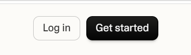
- Digite, no chat da
ferramenta, exatamente o seguinte comando: "Crie uma página web de tela cheia
com a vibe [VIBE ESCOLHIDA]. No centro, coloque um botão gigante com o texto 'GERAR
DESTINO'. Quando clicado, o fundo deve mudar para uma cor que represente
[SENTIMENTO] e uma frase de efeito sobre tecnologia deve aparecer em uma animação
suave."
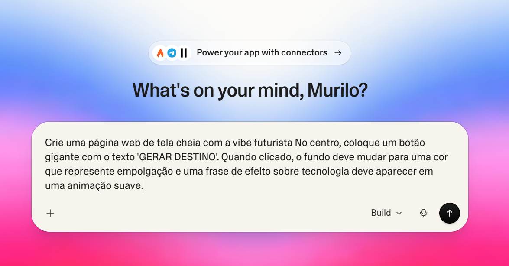
- Selecione “Build” e clique
em “Gerar (↑)”. Enquanto o código é escrito pela IA em segundos, peça aos estudantes
que observem a aba lateral de código. Nela, será possível visualizar uma Timeline
simples das alterações realizadas. Além disso, na aba “Changes”, acessível pelo
histórico (clicando nos três pontos verticais e, em seguida, na opção “View Code
Changes”), será possível observar a complexidade do código gerado. Chamar a atenção
para essa observação reforça que o resultado é fruto de um processamento algorítmico
estruturado, e não de um mecanismo "mágico".
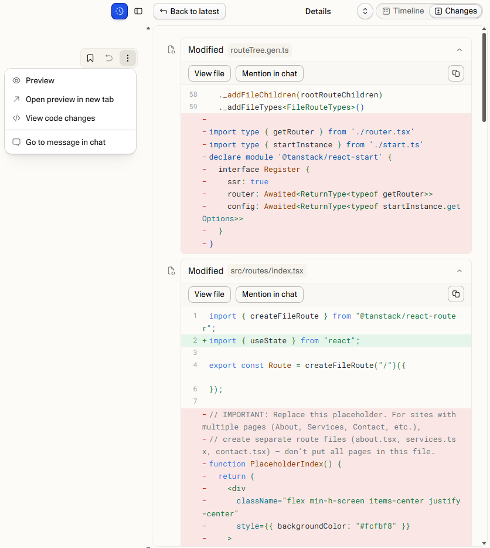
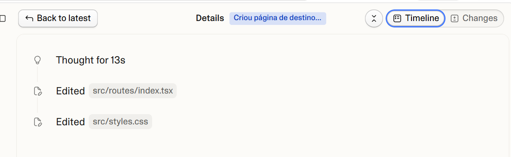
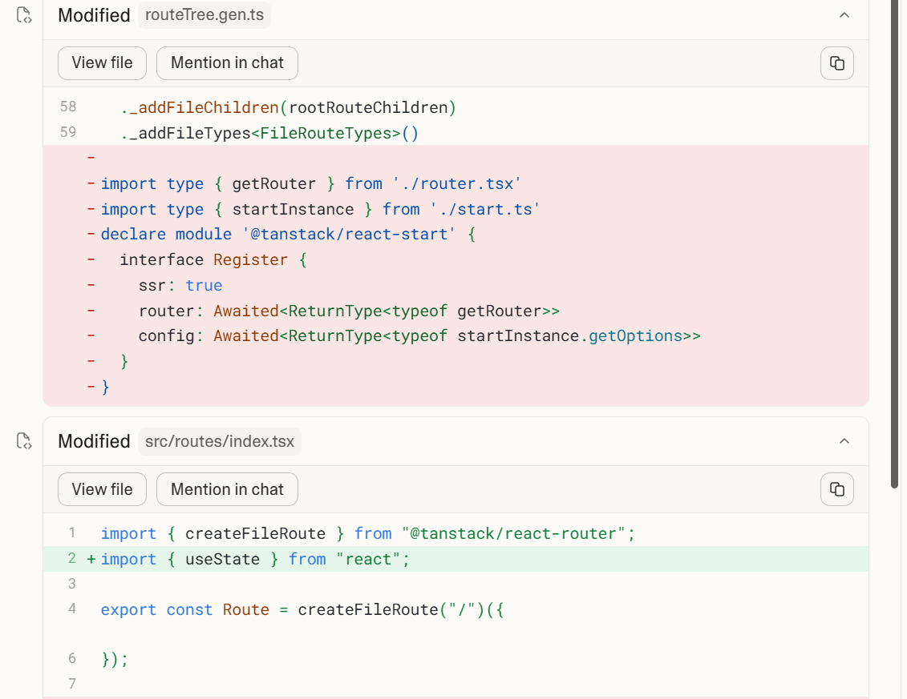
- Após a geração, aparecerá
o botão “Preview”. Antes de clicar nele, chame um estudante para interagir com a
criação. O processo costuma ser rápido e dura menos de 3 minutos.
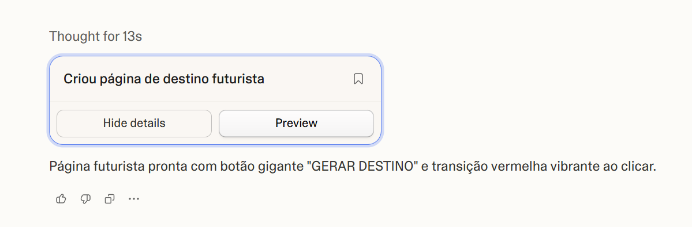
- Ao pressionar “Preview”, o
estudante visualizará o site e poderá observar o efeito programado. Essa interação
simples demonstra como um prompt pode ser convertido em sistema funcional, servindo
como exemplo inspirador para a etapa seguinte.
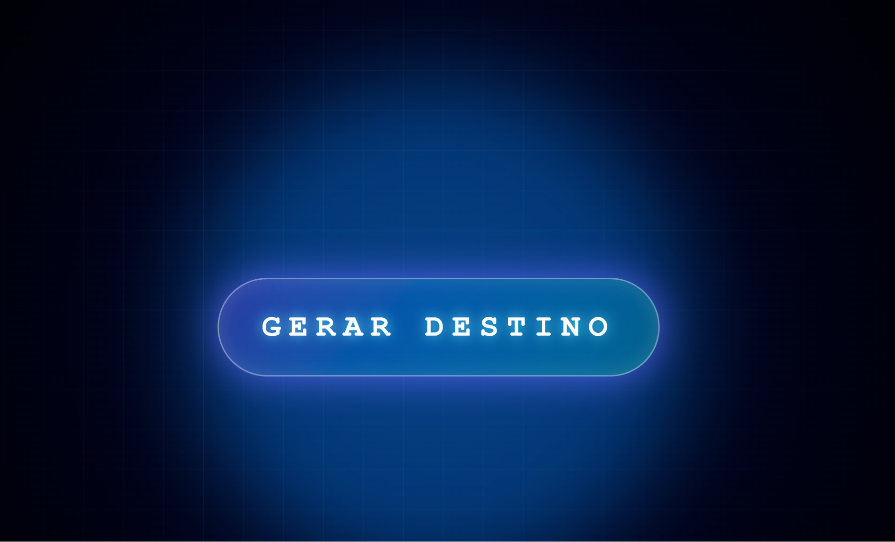
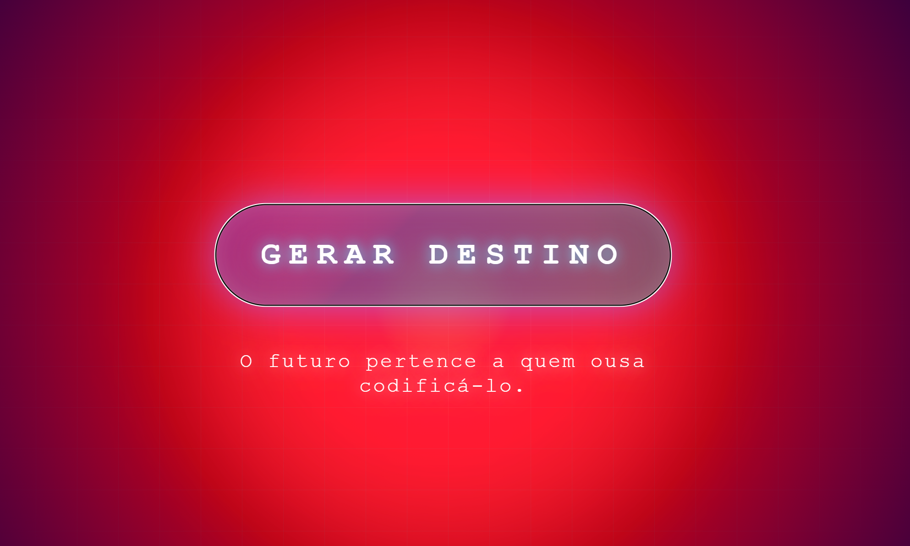
- Após o clique, pergunte: Nós programamos as cores? Escrevemos a animação? Escute as respostas e conduza a conversa para que os estudantes compreendam que o papel humano foi definir objetivos e critérios, ao passo que à IA coube a implementação técnica.
- Para o fechamento da etapa, sugira uma mediação como: Agora que vocês viram a ferramenta funcionar, é hora de sair do papel de observadores. O teclado está com vocês. Vamos construir algo que não apenas mude cores, mas que também resolva um problema. Bem-vindos ao Vibe Coding!
Criar
60 minProtótipo
Criando o Vibe Coding
tips_and_updatesDicas de condução
Refletir
20 minAprendizados
Dinâmica de compartilhamento
Por uma facilidade logística, recomenda-se organizar a apresentação no formato de feira de projetos. Em cada trio, um estudante permanece no computador apresentando o protótipo, enquanto os outros dois circulam pela sala explorando diferentes soluções. Após aproximadamente 5 minutos, os papéis se invertem, garantindo que todos tenham a oportunidade de apresentar e conhecer outros projetos.
Este tipo de dinâmica privilegia os interesses e as afinidades temáticas dos estudantes, permitindo a eles ver, interagir e fornecer feedbacks a soluções que “conversam” com eles. É também um momento estratégico para que o grupo apresente os pontos de melhoria previamente identificados, solicitando feedback dos colegas e avaliando se as sugestões fazem sentido sob novas perspectivas.
De modo complementar, é possível criar um mural digital ou outro ambiente em que todos possam colocar os links dos projetos. Isso traz uma visibilidade que vai além do momento da oficina. O Lovable tem uma opção de preview na qual é criado um link temporário que dura 7 dias.
Para publicar o projeto de forma permanente, localize o botão “Publish”, geralmente situado no canto superior direito da interface. Ao clicar nessa opção, é possível definir ou alterar a URL do site e configurar elementos como título, descrição, imagem e ícone.
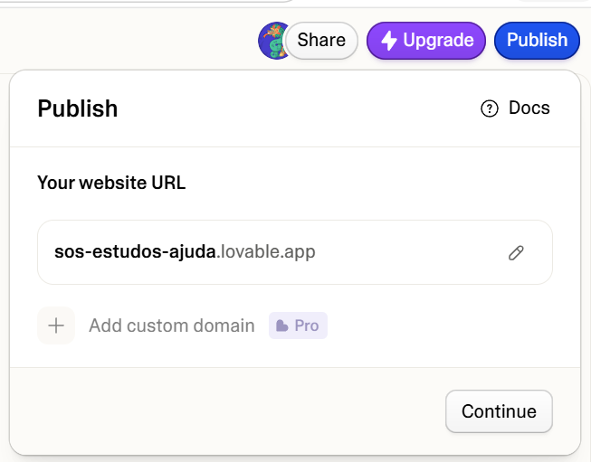
Após avançar nas etapas de configuração, selecione “Continue” até concluir a publicação. Ao final do processo, o link definitivo poderá ser copiado ou acessado diretamente pela opção “View app”.
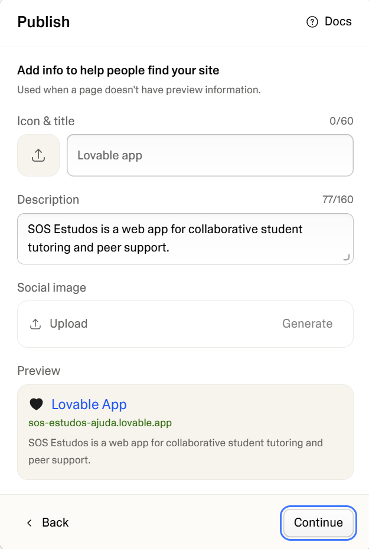
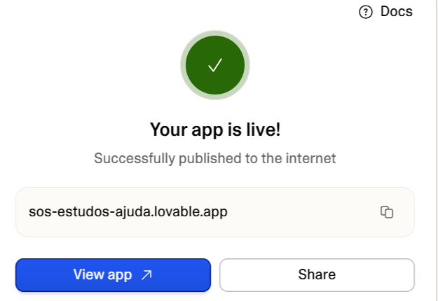
helpPerguntas reflexivas
- Em que momento da atividade a intervenção humana foi decisiva para evitar que a IA gerasse uma solução genérica ou pouco adequada?
- Ao desenvolver uma solução para um problema local, que critérios devem ser considerados para garantir que o aplicativo seja confiável e eticamente responsável?
Para ir além
30 minO desenvolvimento de um produto digital não se encerra na primeira versão gerada. É necessário revisitar o projeto, analisar feedbacks recebidos e implementar melhorias progressivas, aproximando cada vez mais a solução da intenção inicial do grupo.
Ao acessar o projeto, o Lovable oferece sugestões automáticas de aprimoramento, cabendo ao grupo avaliar criticamente quais delas fazem sentido para os objetivos definidos inicialmente. Na aba “Home”, é possível visualizar os projetos criados e continuar a iterar sobre eles.
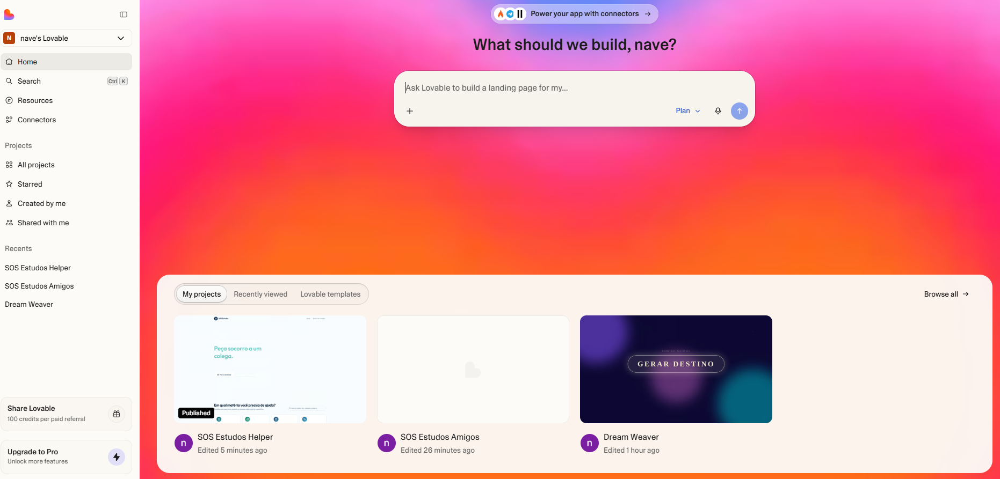
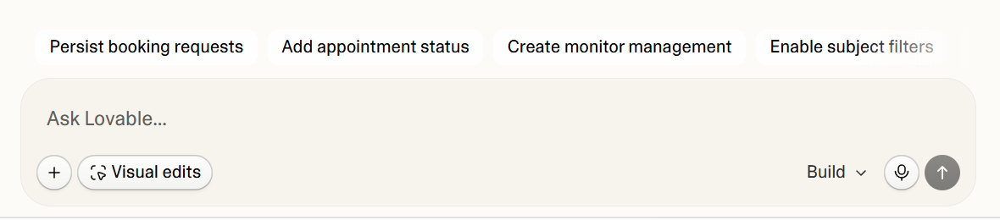
Como exemplo, pode-se utilizar uma sugestão gerada pela própria ferramenta, que identifica possíveis melhorias alinhadas ao projeto desenvolvido. Ao selecionar a opção “Create monitor management”, o sistema preenche automaticamente um novo prompt com uma proposta de expansão funcional.
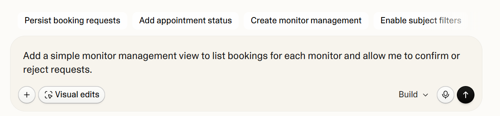
Após confirmar a ação, em poucos segundos uma nova área é incorporada ao site, o que possibilita ao grupo avaliar a funcionalidade adicionada e realizar ajustes, se necessário.
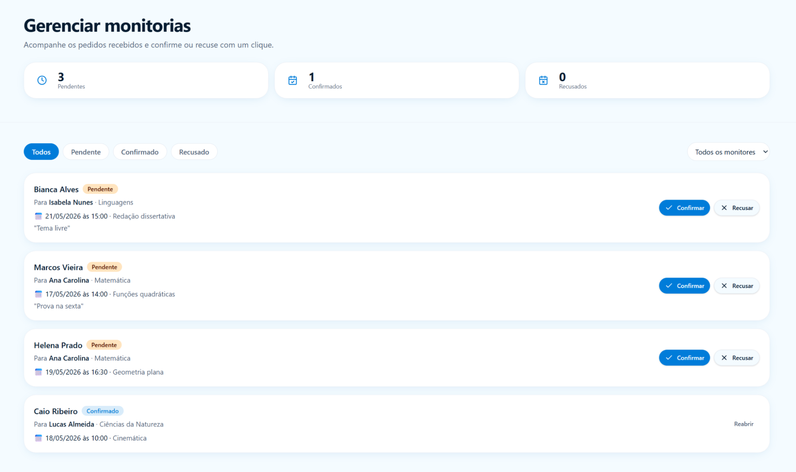